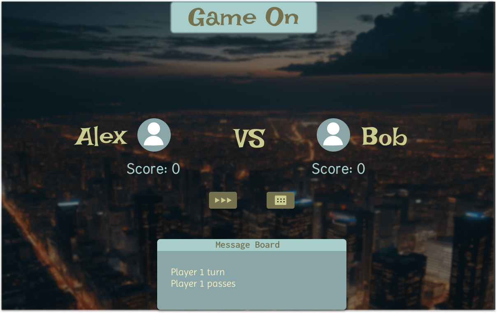

Final Project Report
The people who critiqued my work are two of my friends who graduated with a CS degree and Design degree. Their names are Alexis and Alex. In the feedback, Alexis who has a design degree told me that I should make the buttons more animated when the user hovers over them. He also gave feedback that I should implement a an overlay that allows the players to input their name and the number of score they want. He also mentioned that the chat feature should be more aligned to the left and have a underline under it, to seperate the next text below it. Alex with the CS degree told me that I should add object oriented to the game to make the code look much cleaner. This would require me to seperate the javascript file into a different file.